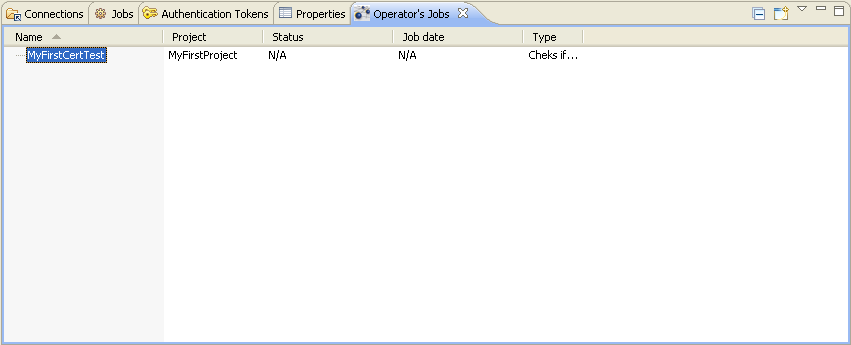
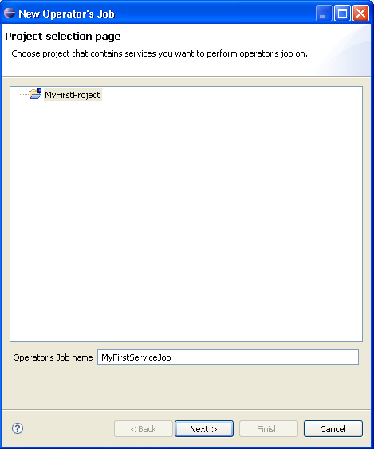
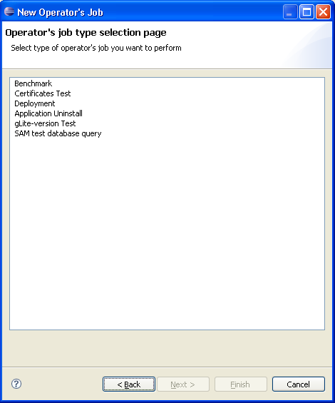
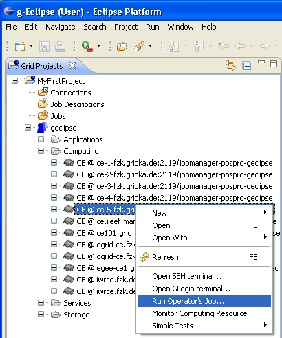
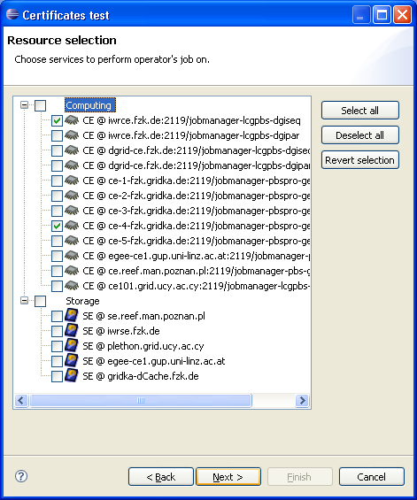
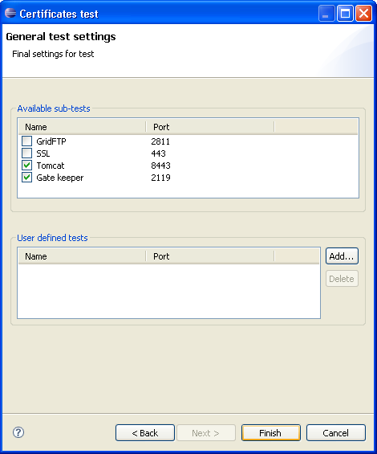
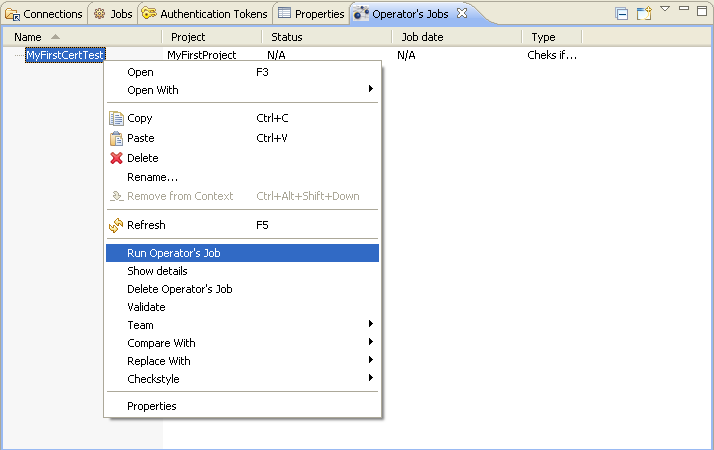
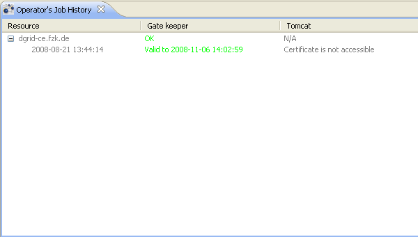
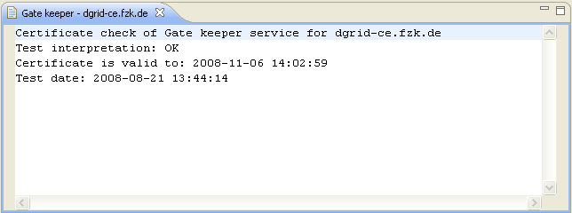
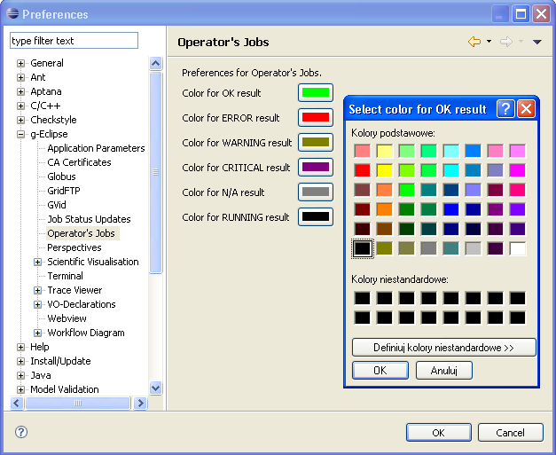

Using g-Eclipse user can perform service job operations, which consist of testing, monitoring, benchmarking and deploying applications, on resources available in his or her Virtual Organization. g-Eclipse allows contributors to write their own service jobs, but built in this release comes the following middleware independent test:
Service jobs are associated with a dedicated view, called Operator's Jobs view (to open: Window > Show view > Other... > g-Eclipse > Operator's Jobs). You can see this view with single service job created on the screenshot below.
To run a new service job operation click New Operator's Job Wizard icon in upper-right corner of the Operator's Jobs view. This will open a New Operator's Job Wizard for you. Wizard can be also opened in a standard way, through File > New... > Other... > g-Eclipse > Operator's Job.
On the first page of the wizard (see screenshot above) you have to select a project in which you want to run service job in and provide a name for it.
Second page (see screenshot above, NOTE: service jobs listed in the screenshot, which contains many middleware-specific service jobs, may differ with your list) lists all installed service jobs. User is asked to select one which he wants to perform
Contents of the next pages of the wizard differ depending on which service job type you selected on the previous page.
Another option to create a service job operation is to select resource(-s) you want to run service jobs on under Virtual Organization node in Grid Project View. Then from the context menu select "Run Operator's Job ..." (see screenshot above). The New Operator's Job Wizard will be opened. Some of the wizard pages may be omitted if you choose this way of creating service job operation. For example common Project Selection Page and Resource Selection Page will not be shown, because all the data can be read from the selection.
Perform this kind of test if you want to check certificates validity of services in your Virtual Organization. First two pages are as described above - select project which you want to run test in and name and type of the service job (Certificates Test).
On the Resource Selection Page you have to choose resources on which services you want to test are located. You can choose more than one resource by pressing Ctrl key.
Next page is the General Test Settings Page on which you are asked to choose what kind of services you would like to test for certificates validity. In addition, you can manually add other services you want to test by specifying name and port of the service.
Notice: to test GridFTP service you have to have CA certificates imported.
That was the last page of Certificate Lifetime Test's wizard. Press finish and your test will appear in Operator's Jobs view. Now you have to run it.
To run a service job you simply choose Run Operator's Job from its context menu in Operator's Jobs view.
Service job is run as a background Eclipse task. Depending on type of service job and number of resources it may take some time.
Each service job can be run many times.
After your service job was successfully started you can see its details in Operator's Job History and standard Eclipse Properties view.
To open this view choose Show details from service job's context menu in Operator's Jobs view. You can also go to Window > Show view > Other... > g-Eclipse > Operator's Job History.
Operator's Job History view shows information about service job that is selected in Operator's Jobs view.
In Operator's Job History view you will see service jobs grouped by specified resources. Each children of the resource node represents single started service job. Performing same service job results in adding another children to the resource node.
Each service job's specifies number of sub-tasks (sometimes only one) which are needed for it to succeed. Results of the sub-tasks are shown in appropriate column in Operator's Job History view.
Even more details can be seen when you double click single service job result (the intersection of service job run row and sub-task column) - an editor will open with result description.
In Operator's Job History view different service job results have different colors so it is more readable for user at first sight. Those colors can be defined on Operator's Jobs preference page (Window > Preferences... > g-Eclipse > Operator's Jobs).
